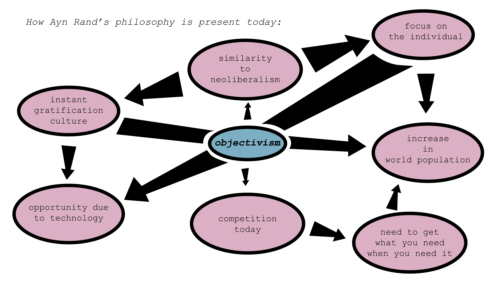

daisy's weeklies
weekly 1
Vaster Than Empires and More Slow by Ursula le Guin
The Ursula Le Guin reading was an interesting science fiction allegory
for issues that we see in real life. I know in class we talked about
the ways that the new planet represents our planet Earth after the
introduction and growth of the Internet - the way it is an undercurrent
to our reality or our natural lives. However, I recognized the new
planet as an allegory for the rural areas that have the Internet and
Western technologies introduced. The way the planet reacted poorly, or
the inhabitants felt afraid of the colonists. Also, Osden represented a
translator figure between the colonists and the inhabitants. It is
interesting that he was the first of the characters to fully understand
the thoughts of the inhabitants, more interesting that the colonists
adopted the inhabitants’ fear and that they acted in an empathetic
fashion. This event is most likely the reason why the colonists left,
and how this version of colonialism does not look like ours.
This way of analyzing the short story, or the events in the short story
also relates to our version of technological colonialism. I will never
forget when I was informed that even tribal lands in Africa had access
to 3G cell service at a Model United Nations conference in Vancouver,
BC. Access to technology in rural areas of the world, or places that
would be deemed “off the grid” creates opportunity but also indicates
how prominent and inconsiderate Western tradition is abroad.
weekly 2
